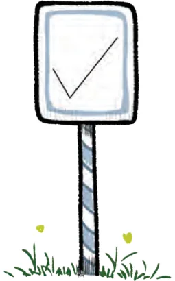
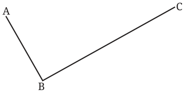
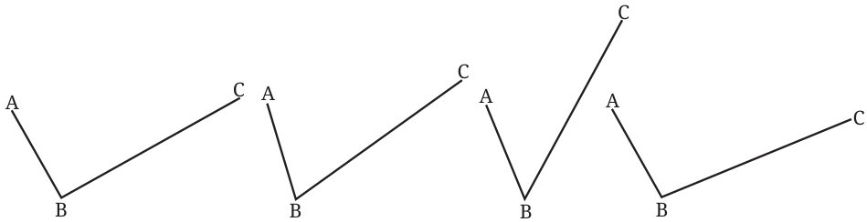
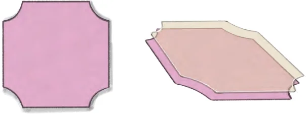
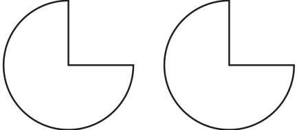
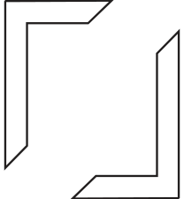
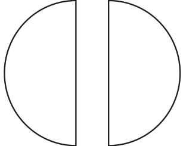

The symbol on this signboard needs to be recreated on another board.

How do we do it? One way is to trace the outline of this symbol on tracing paper to reconstruct the figure. But this is difficult for big symbols. What else can we do?
Can we take some measurements that would allow us to exactly recreate this figure? If yes, what measurements should we take? Let us name the corner points of this symbol as shown.

Are the arm lengths AB and BC sufficient to exactly recreate this figure?
Suppose these lengths are \(AB = 4\) cm, \(BC = 8\) cm. We observe that several such symbols can be constructed with the same lengths.

To get the exact replica, would it help to take any other measurement? The measure of \(\angle ABC\), along with the two arm lengths AB and BC, fix the shape and size of this figure.
Can you draw the symbol if it is known that \(AB = 4\) cm, \(BC = 8\) cm, and
\(\angle ABC = 80 ^{\circ}\) ?
These three measurements can help us create an exact replica of the symbol on the signboard. Figures that are exact copies of each other or have the same shape and size are said to be congruent. Congruent figures can be superimposed exactly, one over the other.

Two congruent figures are shown below. You could use a tracing paper to trace the first figure and superimpose it on the second one. You will find that they fit exactly, one over the other.

Note that while checking for congruence, a figure can be rotated or flipped before superimposing it on the other figure. So, the following pairs of figures are also congruent to each other.


Let us get back to the symbol we saw on the signboard. Suppose there are two such symbols that look identical and we need to confirm that they are indeed congruent. Can we use their measurements to verify this? If it is known that both symbols have the same arm lengths, can it be concluded that the two symbols are congruent? We have seen that there can exist several such non-congruent figures with different angles between the given arm lengths. Fixing the angle determines the shape and size of the figure. Thus, if both symbols have the same arm lengths and angle, we can be sure that the figures are congruent.